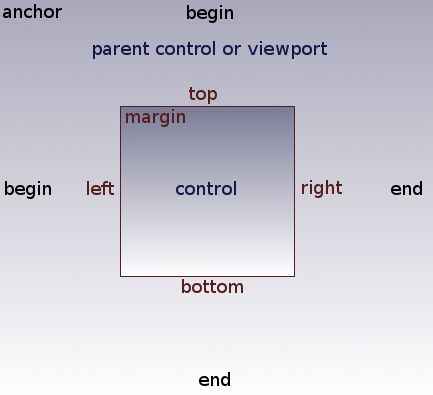
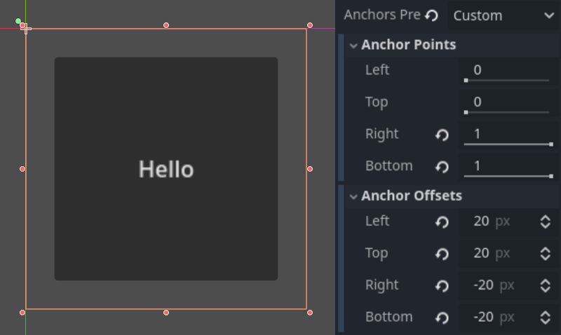
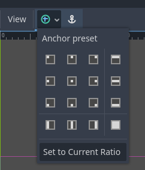

Kích thước và anchor
Nếu một game luôn chạy trên cùng một thiết bị và cùng độ phân giải, việc định vị control chỉ đơn giản là đặt vị trí và kích thước cho từng control. Tiếc là điều đó hiếm khi xảy ra.
Mặc dù một số cấu hình phổ biến hơn những cấu hình khác, các thiết bị như điện thoại, máy tính bảng và máy chơi game cầm tay có thể khác nhau rất nhiều. Vì vậy, ta thường phải tính đến các tỷ lệ khung hình, độ phân giải và tỷ lệ phóng của người dùng khác nhau.
Có nhiều cách để xử lý điều này, nhưng hiện tại, hãy hình dung rằng độ phân giải màn hình đã thay đổi và các control cần được định vị lại. Một số sẽ cần bám theo cạnh dưới màn hình, số khác bám theo cạnh trên, hoặc có thể là lề phải hoặc lề trái.

Việc này được thực hiện bằng cách chỉnh anchor offset của control, hoạt động tương tự như lề. Để truy cập các cài đặt này, trước tiên bạn cần chọn anchor preset Custom.
Mỗi control có bốn anchor offset: trái, phải, dưới và trên, tương ứng với các cạnh của control. Theo mặc định, tất cả đều biểu thị khoảng cách tính bằng pixel so với góc trên bên trái của control cha hoặc (nếu không có control cha) viewport.

Vì vậy, để làm control rộng hơn, bạn có thể tăng offset phải và/hoặc giảm offset trái. Điều này cho phép bạn đặt chính xác vị trí và hình dạng của control.
Các thuộc tính anchor điều chỉnh điểm mà offset được tính tương đối theo. Mỗi offset có một anchor riêng có thể điều chỉnh từ đầu đến cuối của control cha. Vậy các anchor dọc (trên, dưới) điều chỉnh từ 0.0 (đỉnh của cha) đến 1.0 (đáy của cha) với 0.5 là chính giữa, và các offset của control sẽ được đặt tương đối theo điểm đó. Các anchor ngang (trái, phải) cũng điều chỉnh tương tự từ trái sang phải của cha.
Lưu ý rằng khi bạn muốn cạnh của control nằm phía trên hoặc bên trái điểm anchor, bạn phải đổi giá trị offset thành số âm.
Ví dụ: khi các anchor ngang được đổi thành 1.0, giá trị offset sẽ trở thành tương đối so với góc trên bên phải của control cha hoặc viewport.

Đặt hai anchor ngang hoặc hai anchor dọc ở các giá trị khác nhau sẽ khiến control thay đổi kích thước khi control cha thay đổi. Ở đây, control được đặt để neo góc dưới bên phải của nó vào góc dưới bên phải của cha, trong khi các offset trên bên trái vẫn được neo vào góc trên bên trái của cha, nên khi thay đổi kích thước cha, control sẽ luôn phủ lên nó, chừa lại khoảng cách 20 pixel:

Căn giữa một control
Để căn giữa một control trong cha của nó, hãy đặt các anchor của nó thành 0.5 và mỗi offset bằng một nửa kích thước tương ứng. Ví dụ, đoạn code dưới đây cho thấy cách căn giữa một TextureRect trong cha của nó:
var rect = TextureRect.new()
rect.texture = load("res://icon.svg")
rect.anchor_left = 0.5
rect.anchor_right = 0.5
rect.anchor_top = 0.5
rect.anchor_bottom = 0.5
var texture_size = rect.texture.get_size()
rect.offset_left = -texture_size.x / 2
rect.offset_right = texture_size.x / 2
rect.offset_top = -texture_size.y / 2
rect.offset_bottom = texture_size.y / 2
add_child(rect)
var rect = new TextureRect();
rect.Texture = ResourceLoader.Load<Texture>("res://icon.svg");
rect.AnchorLeft = 0.5f;
rect.AnchorRight = 0.5f;
rect.AnchorTop = 0.5f;
rect.AnchorBottom = 0.5f;
var textureSize = rect.Texture.GetSize();
rect.OffsetLeft = -textureSize.X / 2;
rect.OffsetRight = textureSize.X / 2;
rect.OffsetTop = -textureSize.Y / 2;
rect.OffsetBottom = textureSize.Y / 2;
AddChild(rect);
Đặt mỗi anchor thành 0.5 sẽ dời điểm tham chiếu của các offset về tâm của cha. Từ đó, ta đặt các offset âm để control có kích thước tự nhiên của nó.
Anchor Preset
Thay vì điều chỉnh thủ công giá trị offset và anchor, bạn có thể dùng menu Anchor trên thanh công cụ, phía trên viewport. Ngoài căn giữa, nó còn cung cấp nhiều tùy chọn để căn chỉnh và thay đổi kích thước control node.
